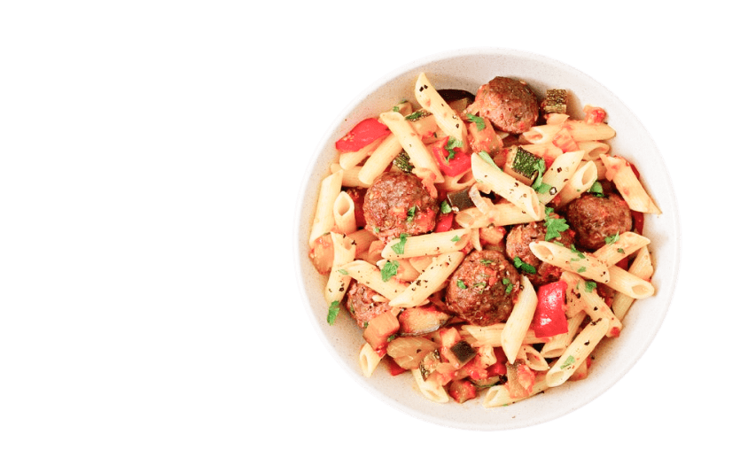
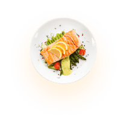
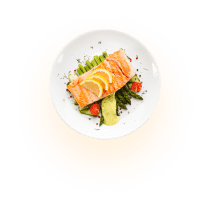
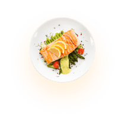

F.palace

Good Food
Good Mood
The food palace is an neighborhood restaurent serving seasonal global cuisine driven by the faire.
Explore food menu

 






About us
Simple Way of Eating Delicious
Keep healthy food readily available. When you get hungry, you're more likely to eat the first thing you see on the counter or in the
Explore Our Story